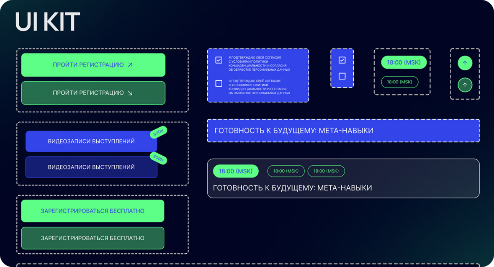

UX/UI дизайн
UI Kit
UI Kit ― набор всех элементов, на которых строится UI вашего сайта (UI elements). Он представляет собой набор готовых графических элементов, типографики, цветовых решений и стилей оформления, объединенных в единую систему.
UI kit позволяет не только быстро и качественно создавать каждую следующую страницу с использованием проверенных компонентов и по образцу предыдущих, но и является главным дизайнерским документом проекта, с которым сверяются все участники на каждом этапе работы.
Преимущества UI kit:
1. Ускорение процесса разработки за счет готовых решений
2. Поддержание визуальной согласованности и узнаваемости бренда
3. Улучшение общего пользовательского опыта за счет знакомых элементов
4. Упрощение внесения изменений и обновлений в интерфейс

Изображение Behance:Екатерина Кейплак
Как UI Kit помогает при создании UI сайта и приложения
Благодаря использованию UI Kit, дизайнерам не нужно с нуля создавать каждый отдельный элемент интерфейса, такой как кнопки, меню, иконки и так далее. Вместо этого они могут выбрать необходимые компоненты из готового набора, уже прошедшие тщательную проработку и тестирование на удобство использования. Это позволяет быстрее разрабатывать концепции дизайна и итеративно улучшать их.
Для разработчиков использование UI Kit также имеет свои преимущества. Они могут быстро интегрировать готовые компоненты в код, не тратя время на реализацию каждого элемента с нуля. Кроме того, UI Kit обеспечивает единообразие во всем пользовательском интерфейсе, гарантируя, что все элементы будут выглядеть и вести себя последовательно, что положительно сказывается на общем пользовательском опыте.
Важно отметить, что UI Kit не ограничивается только визуальными аспектами. Он также включает в себя рекомендации по взаимодействию, анимациям, микровзаимодействиям и другим аспектам, которые влияют на удобство и интуитивность использования приложения или веб-сайта. Следуя этим рекомендациям, разработчики и дизайнеры могут создавать интерфейсы, отвечающие высоким стандартам пользовательского опыта.
Что будет если не использовать UI kit
Отсутствие визуальной согласованности
Без единого UI Kit, каждый элемент интерфейса (кнопки, меню, иконки и т.д.) может быть разработан по-разному, что приведет к несогласованному виду продукта. Это нарушит узнаваемость бренда и ухудшит общий пользовательский опыт.
Более длительный процесс разработки
Если дизайнеры и разработчики будут создавать каждый элемент с нуля, это значительно увеличит время и трудозатраты на создание интерфейса. Им придется тратить больше времени на проектирование, тестирование и интеграцию каждого компонента.
Снижение юзабилити
Без опоры на проверенные UI-паттерны и рекомендации по взаимодействию, интерфейс может получиться менее интуитивным и удобным для пользователей. Это негативно повлияет на общую эффективность и конверсию продукта.
Как сделать UI Kit
1. Определение целей и спецификаций
Начни с понимания целей и задач твоего продукта, а также требований к пользовательскому интерфейсу. Определи ключевые характеристики, которые должны быть отражены в UI Kit.
2. Разработка визуального стиля
Создай последовательную визуальную систему, включающую:
- Цветовую палитру (основные и вторичные цвета)
- Типографику (шрифты, размеры, стили)
- Иконографику (набор иконок и их стилистика)
- Графические элементы (кнопки, меню, панели и т.д.)
Убедись, что все эти компоненты гармонично сочетаются и поддерживают общий бренд-айдентику.
3. Определение паттернов взаимодействия
Разработай пользовательские сценарии и соответствующие паттерны взаимодействия, такие как:
- Навигация и управление
- Ввод данных и формы
- Уведомления и всплывающие окна
- Анимации и микровзаимодействия
Задай стандарты поведения и реакции для каждого типа компонента.
4. Создание библиотеки компонентов
Систематизируй все визуальные элементы и паттерны взаимодействия в виде четко структурированной библиотеки компонентов. Каждый компонент должен быть тщательно продуман, протестирован и задокументирован.
5. Разработка руководства по использованию
Создай подробное руководство (Design System), которое будет содержать:
- Описание целей и принципов UI Kit
- Спецификации для каждого компонента
- Рекомендации по применению и комбинированию элементов
- Примеры реализации в различных контекстах
6. Внедрение и поддержка
Интегрируй UI Kit в процесс разработки, организуйте обучение команды и регулярно обновляйте библиотеку компонентов. Внимательно следи за обратной связью и вносите необходимые улучшения.
Пример
Рассмотрим процесс создания UI Kit на примере разработки приложения для музыкальной стриминговой платформы.
Шаг 1. Определение целей и спецификаций
Основные задачи нашего приложения:
- Предоставить пользователям удобный доступ к музыкальному контенту
- Обеспечить персонализированные рекомендации и плейлисты
- Поддержать социальное взаимодействие между пользователями
Ключевые требования к пользовательскому интерфейсу:
- Четкая иерархия и навигация
- Акцент на визуальном представлении музыкального контента
- Интуитивное управление воспроизведением
- Возможность легко находить, сохранять и делиться музыкой
Шаг 2. Разработка визуального стиля
Цветовая палитра:
- Основной цвет - насыщенный синий, символизирующий глубину и спокойствие
- Акцентные цвета - яркие оттенки зеленого и желтого для создания динамики
- Нейтральные оттенки серого для баланса и читаемости контента
Типографика:
- Заголовки - шрифт Montserrat, размер 24-36px
- Основной текст - Roboto, размер 16px
- Микротекст - Roboto, размер 12-14px
Иконографика:
- Набор из 50 стилизованных иконок, отражающих музыкальную тематику
- Использование единого "квадратного" стиля, чтобы создать визуальную гармонию
Графические элементы:
- Карточки альбомов, треков и плейлистов с закругленными углами
- Кнопки управления воспроизведением с плавными переходами
- Всплывающие окна с затемнением фона для модальных взаимодействий
Шаг 3. Определение паттернов взаимодействия
Навигация:
- Главное меню в нижней части экрана с основными разделами
- Боковое выдвижное меню для доступа к дополнительным функциям
- Вкладки для переключения между недавно прослушанным, рекомендациями и т.д.
Поиск:
- Строка поиска вверху экрана с возможностью голосового ввода
- Всплывающее окно для расширенных фильтров и сортировки
Управление воспроизведением:
- Компактный плеер в нижней части экрана
- Всплывающее окно с расширенными элементами управления
- Жесты (свайп, тап) для основных действий
Социальные взаимодействия:
- Кнопки "Поделиться", "Сохранить" и "Лайкнуть" на карточках контента
- Всплывающие уведомления о действиях друзей
Шаг 4. Создание библиотеки компонентов
Основные компоненты:
- Кнопки (первичная, вторичная, текстовая)
- Карточки альбомов, треков и плейлистов
- Панели с информацией о воспроизводимом треке
- Элементы управления плеером (кнопки, прогресс-бар)
- Строка поиска и фильтров
- Модальные окна (плейлист, профиль пользователя)
- Индикаторы состояния (загрузка, пустые состояния)
Каждый компонент имеет подробные спецификации по:
- Визуальному стилю (цвет, типографика, отступы)
- Взаимодействию (клики, жесты, анимации)
- Адаптивному поведению (под разные устройства)
Шаг 5. Разработка руководства по использованию
Создается подробный Design System, в котором описаны:
- Введение и основные принципы UI Kit
- Цветовая палитра, типографика, иконографика
- Спецификации для каждого компонента с примерами
- Рекомендации по комбинированию элементов
- Гайдлайны по адаптации и отзывчивому дизайну
Шаг 6. Внедрение и поддержка
UI Kit интегрируется в рабочий процесс команды разработки.
Проводится обучение дизайнеров и разработчиков.
Регулярно вносятся обновления на основе:
- Отзывов пользователей
- Изменений в бизнес-требованиях
- Внедрения новых технологий
Примеры заданий для практики
Создание базовых компонентов
Разработай набор базовых компонентов UI, включая кнопки (классические, плоские, с иконками), текстовые поля, переключатели и чекбоксы. Укажи стили и состояния для каждого компонента (нормальное, наведенное, активное).
Выбор цветовой палитры и типографики
Определи цветовую палитру и шрифты для своего UI Kit. Создай документ, в котором будут указаны основные цвета (фоновый, текстовые, акцентные) и шрифты (для заголовков, основного текста и кнопок).
Анимация компонентов
Прототипируй анимации для интерактивных компонентов (например, кнопки и всплывающие окна) с помощью инструментов, таких как Figma или Adobe XD. Определи, какие анимации лучше всего работают для повышения пользовательского опыта.
Описание компонентов
Напиши документацию для своего UI Kit. Включи описание каждого компонента, его применения, визуальных стилей и примеры использования. Создай интерактивный стиль гайдлайна.
Обновление и улучшение
Возьми существующий UI Kit (свое или чей-то другой) и проанализируй его. Определи, какие компоненты можно улучшить или отредактировать, чтобы они лучше соответствовали современным требованиям дизайна.